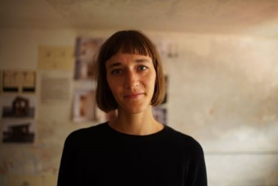
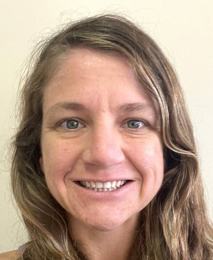
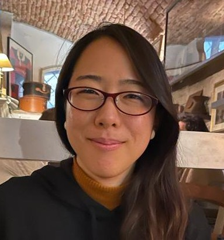
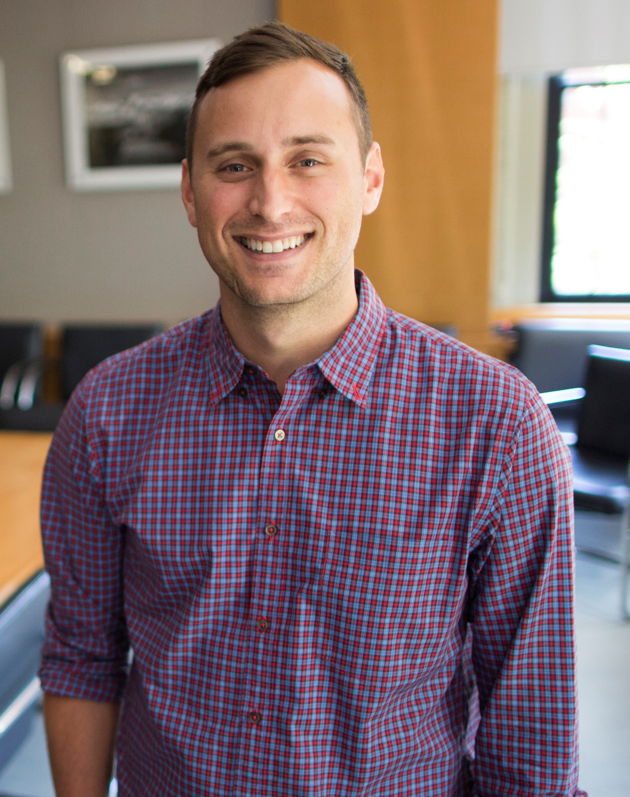

Participants
AFCoP - Writing Workshop, 14-17 January 2025, Residenza Lavernale, Rome, Italy
Organising Committee

Professor Christina Hicks
Professor
Lancaster University
United Kingdom

Dr Kendra Byrd
Senior Research Fellow
University of Greenwich
United Kingdom

Dr Thiru Somasundaram
Research Fellow
Deakin University
Australia

Ms Lydia O’Meara
Ph.D. Candidate
Greenwich University
United Kingdom
Expert attendees

Professor Marian Kjellevold
Research Professor
Institute of Marine Research
Bergen, Norway

Professor Hettie Schönfeldt
DSI/NRF/NDP SARChI Chair in Nutrition and Food Security
University of Pretoria
South Africa

Professor Maria Wik Markhus
Research Professor
Institute of Marine Research
Bergen, Norway
Dr Sian Astley
Secretary General of EuroFIR
Brussels, Belgium
.jpg)
Dr Rita Hannisdal
Researcher
Institute of Marine Research (IMR)
Bergen, Norway

Ms Doris Rittenschober
Consultant
Food and Agricultural Organization of the United Nations (FAO)
Rome, Italy

Dr Kathryn Fiorella
Associate Professor
Cornell University
Ithaca, New York, United States

Ms Molly Ahern
Fisheries Officer
Food and Agricultural Organization of the United Nations (FAO)
Rome, Italy

Dr Jessica Mason
Postdoctoral Research Fellow
Harvard T.H. Chan School of Public Health
Boston, United States

Dr Eva Maire
Researcher
French National Research Institute for Sustainable Development (IRD)
Montpellier, France

Ms Yuko Nanjo
Nutrition and food system officer
Food and Agricultural Organization of the United Nations (FAO)
Rome, Italy

Dr Rajendran Ananthan
Scientist-E
National Institute of Nutrition
Hyderabad, Telangana, India
Ms Sitilitha Masangwi
Food Composition Data Compiler
Lilongwe University of Agriculture and Natural Resources
Lilongwe, Malawi
Remote manuscript contributors

Professor Matilda Steiner-Asiedu
Nutrition/consultant nutritionist
University of Ghana
Ghana

Dr Christopher Golden
Associate Professor
Harvard T.H. Chan School of Public Health
Boston, United States of America
Dr Bridget Holmes
Nutrition and food system officer
Nutrition Assessment Team Leader
Food and Agricultural Organization of the United Nations (FAO)
Rome, Italy
Dr Fernanda Grande
Nutrition and food system officer
Food and Agricultural Organization of the United Nations (FAO)
Rome, Italy